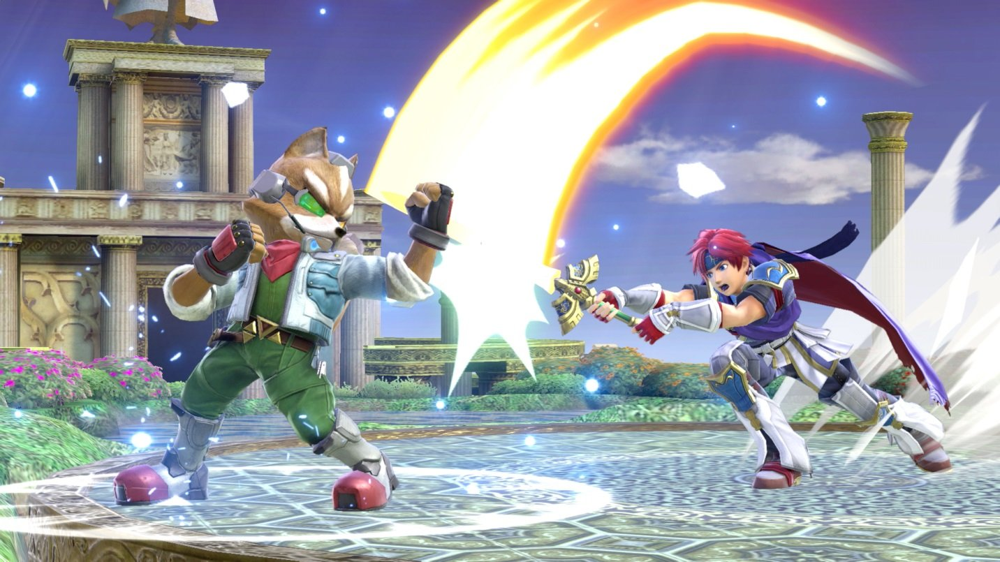
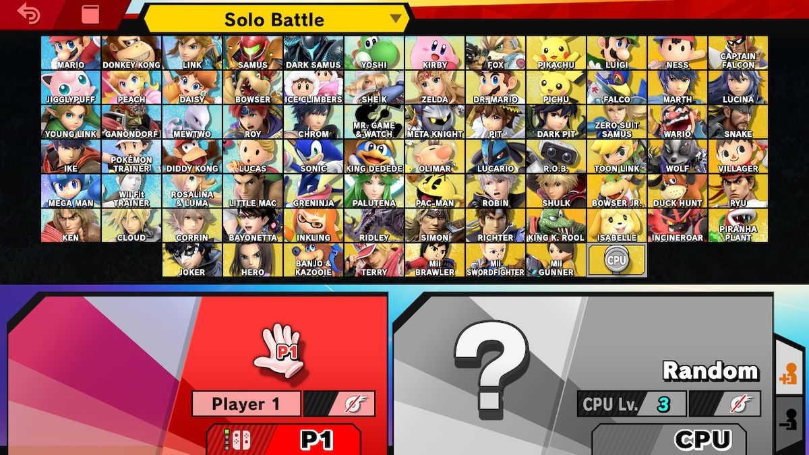

Find out how you can improve as a player and become the best
Read to find out how you can participate in your local smash scene.
There are over a dozen different ways to play Smash ultimate depending on the player. Whether you would like to play a sword characters or one without any disjoints, this will ulitmately change the way you will play and approach your opponent. The question lies however, how does one improve at smash? You may feel like your skills have comme to a stand still and you are seeing no improvement and probably making the same mistakes over and over again. Don't worry, here are 5 ways you you can stop bad habits in your gameplay and increase your abilities as a player.
One of the main mistakes newer players make is only using smash attacks (A+B + direction/Smash stick). This is the most important habit to break out of as it is very predictable and easily punished. Although hitting a smash attack is rewarding, it is better to save these until later to get a K.O or if you know it will connect with your opponent
Super smash bros introduced a new mechanic where rolling repetitvely will cause fatigue, in which the player rolls slower and takes longer to act out of. Although rolling away from your opponent may seem like a safe option, rolling more than once or twice is not desirable and should be avoided at all costs. Instead, you can use other options and mix up your gameplay so your opponent will find it harder to predict your next move. For example, you can try using shield more, jumping or spot-dodging (shield+down).
There are currently 76 characters in Ultimate from over a dozen series, and choosing one to stick to is a very difficult task in itself. You may prefer playing a projectile based character such as Snake or Samus, or perhaps you will enjoy a sword character with disjoints, the main example being Lucina. Lucina is one of the newcomer-friendly characters and also one of the strongest in the game being in S tier. We would definetely recommend picking her up to help improve your fundamentals.
This isn't something you can initially change because it means changing your playstyle as a whole, but is definetely one of the most important aspects when trying to improve. If you watch a pro player you will see that they never opt to use the same option over and over again unless it is safe. This is so their opponent will find it almost impossible to predict their next move. The more options you use means that your opponent will have a hard time matching against your gameplay, giving you the advantage
It is vital to always keep an eye on your opponent when facing them so you can have an idea of what they will be trying to do. Some moves have a long starting animation and so it is actually reactable with a shield or other safe move. While some fast moves are essentially impossible to react to, it is still important to watch your opponent, as you could possibly punish them with a parry or smash attack.

There are 76 characters to choose from in Ultimate, and it can be very difficult to choose one or at least a select few. Different characters means that there are multiple play styles. For example, Pac-Man, a very projectile-based character, means that you will play a much slower game, using projectiles to defeat your opponent. On the other hand, Fox is a very fast-paced rushdown character that will always be in the opponents face. While he does have a projectile (Laser gun), his moveset engages the player to be as close to the opponent as possible. After unlocking all characters, give yourself time to find a character that you enjoy and would like to keep playing. Keep in mind that some characters are easy to pick up while others aren't as such. It is also important to have a decent idea of the strongest and the weaker characters of the cast, as this will ultimately put you at an advantage if you play a stronger character. Have a look at our character selection page to see what characters you may be interested in and take a look at our tier list to find out how strong your character is.
Another way you can improve your gameplay is simply by watching the competitive scence and keeping up to date with it. The smash competitive scene is a fun and enjoyable community which anyone can join. There are also local scenes all across the globe which will gather together in real life scenarios to compete against eachother. Be sure to checkout to find where your nearest local scene is and jump in!
There are top players all across the globe that compete regularly in the biggest tournaments such as EVO and Genesis. These tournaments are filled with thousands of competitors regularly, and these players will most likely make it to the last few rounds every time because of their sheer skill